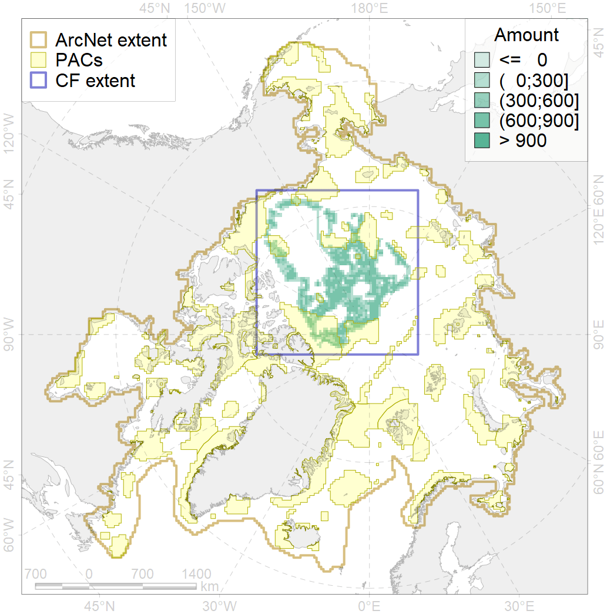
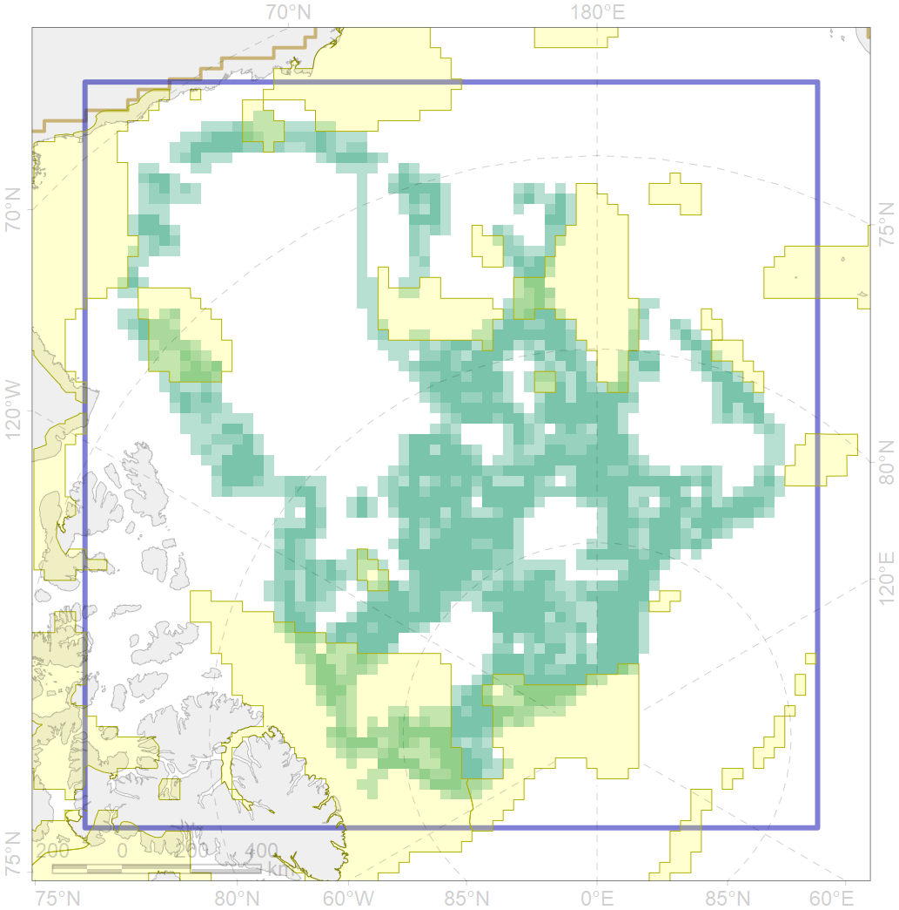

7181

| CF ID | 7181 |
| CF Name | VII.3.3. Abyssal hills |
| Time Period | At least last 100 years |
| Source(s) | Harris et al., 2014; Carmack, Wassmann, 2006 |
| Seasonality | January - December |
| Depth Horizon | |
| Methodology | Data obtained from the literature |
| Author Name | V. Spiridonov, W. Merritt |
| Notes | |
| Conservation Target Set in the Scenario | 0.07183531 |
| Conservation Target Achieved in the Scenario | 0.149 (Scenario: 206.8%) |
| PAC ID | Proportion in the PAC | Contribution to ArcNet Target Achievement | PAC’s Contribution to the Achieved Target |
|---|---|---|---|
| 54 | 7.2% | 100.6% | 48.6% |
| 55 | 2.4% | 27.5% | 13.3% |
| 56 | 0.0% | 0.1% | 0.0% |
| 57 | 1.7% | 20.3% | 9.8% |
| 58 | 0.2% | 3.4% | 1.7% |
| 59 | 1.8% | 22.0% | 10.6% |
| 60 | 0.4% | 3.1% | 1.5% |
| 62 | 0.0% | 0.0% | 0.0% |
| inner | 13.9% | 177.0% | 85.6% |
| outer | 86.1% | 29.8% | 14.4% |